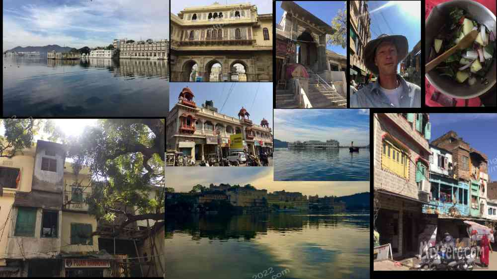
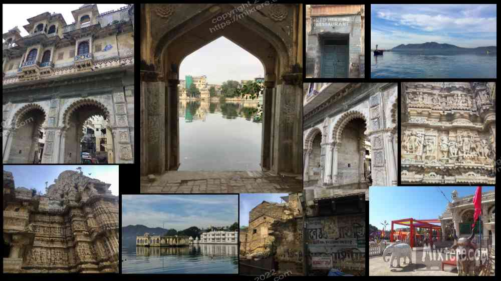

On the bus the sparse hills and vegetation of what I would call desert badlands gave way to real desert. Soil gave way to sand, trees to cactus. Temperatures rose and humidity diminished. After about two hours the bus stopped for tea. I wanted breakfast but it looked like tea and “biscuits” (prepackaged cookies) and dubious pre-fried items sitting in a sweaty case were all that was on offer. I bought some potato chips instead. To this day finding nutritious and safe food continues to be a challenge in India. So many people survive here on watery dal, piles of carbs, sugar, fried flour and tea. This, as well as having a way to boil water for drinking, is why I traveled with a mini electric tea kettle to cook veggies in.
At this rest stop I had my first experience using a pay toilet. Here I was asked “1-Urine?” first and then, “2-Toilet?” The latter offer was ten rupees and not a pleasant experience. But it was not the worst of my Indian toilet adventures. I hurried back on the bus, concerned about having left my big pack on the roof for anyone to peruse. The guidebooks always say to always keep an eye on your luggage. But this is not always possible. And the effort was just empowerment of fear. Before I stepped up into the bus I saw a corner of my pack sticking out from the considerable pile on the roof rack. It had not been disturbed. In my experience, sooner or later one just has to trust the people around. In time one develops a sense, immediately upon entering a scene, whether or not one's guard can be let down.
In a few more hours the next stop was a rest stop offering channa masala and fried puri… and tea of course. I went for those options as I needed fuel so badly it felt worth risking the squirts or worse. The hot food hit the spot. Sitting at my table I was approached by some young Indian men on their own bus-tour of Rajasthan. This was one of those instances of meeting people generally thrilled to meet me. They were overly respectful and did not stick their phone camera in my face. We talked a bit and posed for a few selfies.Then the bus was off again. It took only another hour and a half to reach Udaipur. I had anticipated the town quite a lot of excitement. It is heavily visited by tourists and claimed by many bloggers and youtubers as being one of their favorites. One corny blog comes to mind, the author gushing how Udaipur is "to die for." It's true the town was pleasing to the eye. This was my first glimpse of architecture in Rajasthan. I don’t know the technical terms for all the features of the buildings but their style was characteristically different from any I had seen.

There was an ornateness to the structures, with much more attention given to detail and extra forms than any Indian structures I had seen. Many were accented by huge doors and a series of arches and framed window sills (I forgot the architectural terms). Many of the buildings were stacked on top of each other in a sort of house cards style, but much more stable. These were all painted in weathered, light colors of vanilla, yellow, chartreuse, aqua blue, pink and sandy variants of orange. The colors and the light reflection from the surrounding lakes gave the city the sort of glow that one might find in a coastal community, minus the mist. Udaipur sits along at least one large lake with a series of canals and bridges dividing the city. It is a really photogenic city. That said, it’s interesting how the glossy images on postcards and google maps do not show the plastic trash bobbing about or how polluted the water is. What else is new. Still, Udaipur is perhaps the most beautiful city I have seen in India.
I walked from the bus station a bit and was approached by a Sikh rickshaw driver, Mr. Singh. He was a jolly, turbaned man with a large waxed mustache- a classic Rajasthani look. I had not yet learned to ignore those that approach me. I sensed that I could trust him and hopped into his rickshaw. He had a few suggestions for guesthouses and going against my rule I allowed him to take me. He tore off up a narrow road closely flanked by buildings with retail on the street level and residences or other spaces in the floors above. These multiple-story buildings, the narrow streets and the steady uphill trajectory of the road created the feeling that I was in a dense city. As far as I was concerned I was. Higher up the road we came into more of the center of town. There was a city palace and a museum, a few temples and shops and guesthouses catering to the tourists. For being in such a wide open desert landscape the town felt tightly cramped. We continued over the rise of the road and back down the other side where we followed one of the canals for a while. We stopped at an unfinished and impoverished guesthouse that I was sort of glad to learn was all booked. Then we backtracked to the center of town and I was shown a slightly more expensive room in a turquoise, multi-storied affair. I took it and paid Mr. Singh for his services. He puttered off on his way.
The stairs up the guesthouse were steep and somewhat treacherous. They reminded me just a little of the extremely steep and shallow staircases at an apartment I had stayed at in Holland. Here in Udaipur, up the fourth flight of these intense stairs was a rooftop restaurant that offered views of the city and the lake and mountains in the distance. Only a stone’s throw from there were the rooftop restaurants of the neighboring hotels. There I could see other foreigners lounging under the overhangs shielding them from the hot sun. Apparently Rajasthan’s tourist season is short due to the intense heat that comes after March. It was the beginning of February at the time and so temperatures were still relatively cool. But the weathered buildings seemed to show the stress of the intense desert sun. Perhaps these buildings were not painted pastel colors at all. Perhaps they had been bleached to their pastel tones by the burning desert sun.
I allowed myself a few days to wander around Udaipur without any official tourist stops. I got to know an older British woman saying at the hotel. She, like almost all the British I encounter in India, was cheery and friendly and experienced in traveling the area. We sat on the rooftop restaurant, me under the umbrella and her basking to a deep tan in the desert sun. She was volunteering at a nearby animal shelter of sorts. Apparently she only traveled to do these sort of volunteering stints. I think the last one she went to was in Thailand. I continually reached a sort of barrier that this woman put up, where her interest in interacting had ended and she went off on her own. I could relate to this.